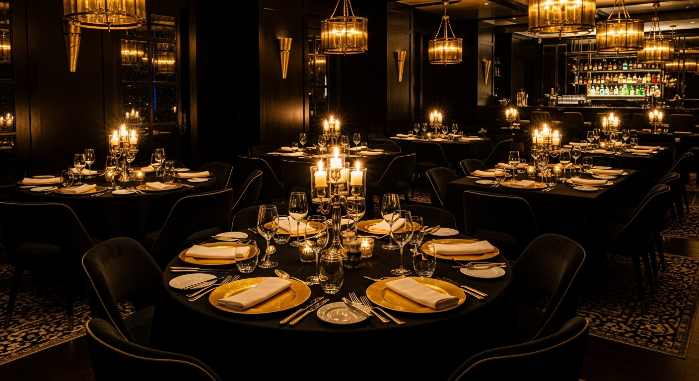

Bar américain


Restaurant • Cocktails • Lounge
Plonge dans l’ambiance — cocktails, vibes et saveurs inoubliables
L’expérience King Aqua
Au cœur de Bacodjicoroni ACI, King Aqua Lounge vous accueille dans un cadre raffiné où chaque plat est une expérience et chaque moment une ambiance.
On vient pour les grillades, les fruits de mer, les cocktails et cette atmosphère tamisée qui transforme un dîner en vraie sortie.


Au bord du fleuve
Tables ouvertes, horizon dégagé, lumière du soir: King Aqua Lounge installe une atmosphère de rooftop tropicale, calme et mémorable.
À commander sans hésiter
Bar américain
Cadre signature
Avis clients
Lumière douce, musique agréable et service attentif. Une vraie adresse pour sortir.
Les gambas et le bœuf sont bien grillés, servis chauds et très savoureux.
Le panier WhatsApp va droit au but. On choisit, on envoie, c’est clair.
Un bel endroit au bord du fleuve pour dîner ou passer la soirée entre amis.